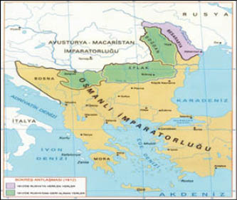
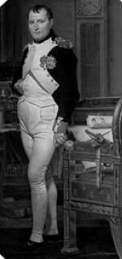
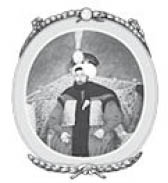
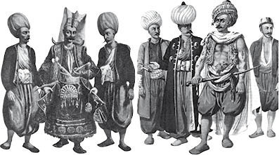

XVIII : BÜKREŞ ANTLAŞMASI
1792-1812
Yaş Antlaşması’ndan yirmi yıl sonra, 1812 yılında yapılan Bükreş Antlaşması’yla Osmanlı’nın sahip olduğu bir bölge daha Rusların hâkimiyetine geçti. Geçen süre boyunca Türkiye tarihi çoğunlukla Napolyon Savaşları içinde bulunduğu durumla ilgilidir, ancak imparatorluğun çökme dönemiyle pek bağlantılı değildir.

1792 yılında Rusya ile savaşın son bulmasıyla Sultan Selim Fransız Devrimi’nden kaynaklanan karışıklıklardan uzak durmaya çalışarak barışı sağlamak için elinden geleni yaptı. Ülkenin bütün idari bölümlerinde reform yapılması gerektiğinin farkındaydı, en önemli reformlar da anayasa ve askerlerin eğitimi için yapılmalıydı. Yeniçeriler devlet için ciddi tehlike olarak görüyordu. Birçok reform düzenledi. Ancak 1798 yılında çıkan ayaklanmalarla başlayan savaş, reform çalışmalarının önünü kesti. Savaş hiç beklemediği bir anda ortaya çıktı, hiçbir sebebi ya da bahanesi olmadan, yıllarca Avusturya’ya karşı Osmanlı’yı koruyan Fransa’nın Devrimci Hükümeti tarafından bir anda vuku buldu. Fransa bir anda Türkiye’nin en yakın komşusu haline geldi. General Bonapart’ın İtalya’da kazandığı zaferlerden sonra, 1797 yılında yapılan Campo-Formio Antlaşması’yla, Venedik Cumhuriyeti ortadan kalktı. Venedik ile beraber birçok İtalyan bölgesi Avusturya’nın hakimiyeti altına girdi. Cumhuriyet’in Adriyatik Denizi’nde hâkimiyeti altında bulunan İyonya Adaları ile anakarada bulunan Preveze ve Parga gibi şehirler Fransa’nın oldu. Venediklilerin zulmünü yaşayan ada sakinleri hükümdarlarının değişmiş olmasını çok iyi karşılandı. Fransa’nın oluşturduğu hükümler Doğu’da yapılacak olan genişleme planlarının tutkusuyla doluydu. Osmanlı İmparatorluğu’nun son bulmak üzere olduğu düşünülüyordu. O dönemde Osmanlı’nın mevcut durumunu haklı çıkaracak birçok olay vardı. Devletin merkezî iktidarı etkisizdi. Janina’nın (Yanya) Ali Paşa’sı, Vidin’in Pazvantoğlu ve Akka’nın Cezzar Paşa’sı gibi birçok bölgenin paşası Osmanlı ile bir bütün olduklarını kabul ediyordu; ancak sultana bağlı olmadıkları aşikardı. Mısır fiilen Memluklular tarafından yönetiliyordu. Osmanlı hükümdarlığı tarafından Mısır’a atanan paşanın başında yetkili bir merci yoktu. İtalya’daki ordunun başında olan Bonaparte, çeşitli bölgelere casuslar yollayarak ayaklanma başlatmak istiyordu, özellikle de halihazırda ayaklanmaların olduğu Yunanistan’a yolladı. İlk bakışta amacının Osmanlı’nın Yunanistan ve Avrupa bölgelerinde sahip olduğu toprakları alarak Fransız topraklarını genişletmek olduğu anlaşılıyor. Bir kısmı İtalya ile savaşan kıdemli askerlerden oluşan kırk bin kişilik ordu Toulon’da toplanmıştı. Bilmedikleri bir istikamete doğru onlara eşlik etmek için iki yüz nakliye gemisi de yola çıktı, ayrıca on beş tane savaş gemisinden oluşan çok güçlü bir filoları da vardı. Diğer on beş firkateyn de konvoya katıldı. Bonapart’ın etkisiyle Beşler Heyeti Mısır’ı istila etmeye karar verdi. Bir darbe meydana gelecekti; ancak Osmanlı hükümetine karşı değil, Fransa’nın savaşta olduğu İngilizlerle karşı olacaktı. Mısır’ı aldıktan sonra, Hindistan’ı ele geçirip Fransa için İngiltere’nin yıkıntıları arasında Doğu İmparatorluğu kurmak gibi hayaller ve rüyalar vardı. Mısır’a yapılan saldırının aslında Osmanlı hükümetine karşı yapılmadığını ima etmeye çalıştılar, bunu da Memluklular tarafından zalim ve acımasız bir yönetim uygulandığını öne sürerek başardılar. Sultana karşı savaş ilan edilmedi. Memluklulara baskın yapılmasına boyun eğmes bekleniyordu. Seferin yapılacağı istikameti belli etmemek için çok büyük bir gizlilik içindeydiler. 19 Mayıs 1798 Bonapart komutasındaki ordu Toulon’dan yola çıktı. Onunla beraber İtalya’da beraber savaşan birçok yetenekli generali ve Mısır’daki anıtları incelemeleri için de bir hayli bilgini de yanına aldı. Beşler Heyeti’nden Bonapart’a gelen emirler aslında hiç şüphesiz Bonapart’ın kendisi tarafından hazırlanmıştı. Bunlar:
İngilizleri doğuda hâkim oldukları ve ulaşabildiği bütün bölgelerden atmak ve Kızıl Deniz’deki askerî merkezlerini yıkıp yıkmak, Süveyş Kanalı’nı bağlayan kara parçasını ele alarak Fransızların o sularda kesin hâkimiyetini sağlamak.
Bu muhteşem filo ve ordunun istikameti kesinlikle İngiliz hükümeti tarafından bilinmiyordu. Ancak Akdeniz girişinde Lord St. Vincent komutasında İngilizlerin çok büyük bir filosu bulunmaktaydı. Toulon’daki Fransız filosunu izlemeleri için bu filonun büyük bir bölümünü ayırarak Nelson’un kumandasına bıraktı. Fransız filosu ile aynı sayıda savaş gemisine sahiplerdi, ancak gemiler o kadarda büyük değildi ve daha az silahları vardı. Fırkateyn açısından da eksik kalıyorlardı.

Napolyon Bonapart
Toulon’dan üç hafta önce kaçan Fransız filosu 10 Temmuz’da Malta’ya vardı. 1565 yılında Osmanlılara karşı adayı çok iyi bir şekilde savunan St. John’un şövalyeleri Fransızlara karşı son derece yetersiz bir savunma gösterdi. Silahşor Rahiplerin çoğu ahlaksız davranışlar sergileyip, yozlaşmışlardı. Eninde sonunda teslim oldular. Bonapart adayı topraklarına kattı ve Eski Düzen küçültücü bir şekilde son buldu.
Dört bin askerini Malta’da bırakan filo Girit’e doğru yola koyuldu, ancak Nelson’un adayla alakadar olduğu haberini öğrenen Bonapart, İskenderiye’ye doğru yelken açmaya karar verdi. İlk defa burada ordusuna istikametlerini bildirdi.
Yazdığı resmî bildiride şöyle hitap etti:
Askerler, öyle bir işgal gerçekleştireceksiniz ki, bunun sonucunda bütün dünya medeniyetlerini ve ticaretini tahmin edilemeyecek kadar değiştirecektir. İngilizlere çok şiddetli bir şekilde darbe yapacaksınız. Onlara son bir ölümcül darbeyi vurmak için beklerken… İngiliz ticaretinden son derece yararlanan Memluklular sizin bölgeye varmanızdan birkaç gün sonra ortadan kalkacaktır.
Bu arada Nelson Fransız filosunun Toulon’dan ayrıldığını öğrendiğinde, zeki bir hamle yaparak onların Mısır’a yöneldiklerini tahmin edip rotasını değiştirerek aynı istikamete doğru ilerledi. Düşman filosunu İskenderiye’de bulmayı umut ediyordu. 28 Haziran günü İskenderiye’ye onlardan önce vardı; ancak Fransız filosnu etrafta göremeyince Sicilya’ya doğru ilerledi. İki filo birbirlerini Girit Adası’nın yakınlarında geçti, eğer hava açık olmuş olsaydı kesinlikle fark ederlerdi, ancak yoğun sis ve firkateynlerin gözcülük yapma isteklerinden ötürü Nelson çok yakınındaki düşmanını göremedi. Hiç şüphesiz ki Fransız filosunun sahip olduğu iki yüz nakliye gemisi onlara ayak bağı olacaktı ve bütün donanma eşi benzeri olmayan bir yenilgi yaşayacaktı. Bu olay gerçekleşmiş olsaydı Korsikalı generalin kariyeri ve Avrupa’nın tarihini etkileyecekti. Son derece şanslı olan Fransız donanması ve ordusu 1 Temmuz’da sağ salim İskenderiye’ye vardı ve karaya ayak bastı. Savaş gemileri limana yanaşamadı ve Abukir koyuna demir attı. İskenderiye küçük garnizonunun gösterdiği zayıf savunma sonrasında ele geçirildi, Bonapart da hafif bir şekilde yaralandı. Bir hafta sonra ordu Kahire’ye doğru ilerlemeye başladı.
Bonapart, daha sonra Mısır halkına yalan ve abartılarla dolu kendine özgü açıklamalarından birini yaparak, aslında Memluklulara karşı savaş açtıklarını kesinlikle onlara ya da sultana karşı gelmediklerini söyledi.
Çok uzun yıllar boyunca Gürcistan’dan köleler satın alındı ve Kafkaslar dünyanın en güzel yerlerini zalimce yönetti; ancak yüce Tanrı ne yapacağını çok iyi bilir, onların imparatorluğunun yok olmasını buyurdu. Mısır halkı, size buraya dininizi yok etmeye geldiğim söylendi. Onlara inanmayın. Size haklarınızı sunmaya geldim, gaspçıları cezalandıracağım, Kur’an’a ve Allah’a ve Peygamber’e Memluklulardan daha çok inanıyorum. Bizim tarafımızı tutanlara ne mutlu, daha refah içinde zenginlik içinde yaşayacaklar….Ancak Memluklularla bir olup bize karşı gelenlerin geleceğinde keder var… Herkes Memlukluların ortadan kalkmasıyla Allah’a şükredecek ve “Padişahım Çok Yaşa” ve “Onun arkadaşı Fransız ordusu sen çok yaşa” diye bağıracaklar. Memluklulara lanet olsun ve Mısır halkının da şansı bahtı açık olsun.
Büyük ve şanlı ordu Kahire’ye doğru ilerlerken sıcak ve kum yüzünden çok büyük acılar çekti. Askerler kendi aralarında, hiçbir zenginliği ve yağmalayacak hiçbir şeyi olmayan bu ülkeye neden geldiklerini konuşmaya başladı. Ancak yol boyunca Memluklularla iki kere karşılaşıp, savaştılar ve her seferinde de zafer kazandılar. İki savaşta da karşılaştıkları ordu az çok on iki bin askerden oluşuyordu, bunun beş bini Memluklu diğerleri ise eğitimsiz fellahlardı. Ancak otuz bin kişilik Fransız ordusu karşısında hiçbir işe yaramadılar. Bonapart’ın Kahire’ye yaklaşmasıyla şehir, geri çekilen Mısırlılar tarafından yağmalandı. Kendisini onların hayatlarının ve mülklerinin koruyucusu olarak tanıttı. Bölgenin düzenini refahını tekrardan sağladı ve hiç zorlanmadı.
Bu arada donanmasıyla Napoli’ye dönen Nelson, Fransız donanmasının kesin hedefinin haberini aldı. Böylece dümenini Mısır’a doğru çevirdi. 1798 yılının unutulmaz 1 Ağustos günü, Abukir Koyu’nda demir atan düşman donanmasıyla karşı karşıya geldi. Şanlı ve muhakkak savaşın hep anlatılan hikâyesini tekrar etmeye gerek yok.
Amiral Brueys komutasındaki Fransız donanması, sayıca fazlalıkta olan ve çok silahı bulunan İngiliz filosu tarafından yok edildi. Amiral öldürüldü ve sancak gemisi havaya uçuruldu. Sadece iki gemisi kaçabildi ki, onlar da Fransa sularına varmadan yakalandı. Böylece Fransız donanmasıyla Fransa hükümeti arasındaki iletişim tamamen kopmuş oldu.
Mısır’da umutsuzca karaya oturdular. Bonapart söz konusu yıkımı 19 Ağustos’a kadar öğrenemedi, İbrahim Paşa’nın idaresinde olan Memlukluların bulunduğu bir ülkeye yaptığı seferde, yenilgiye uğradı ve ülkeden atıldı. Olayı şu şekilde yorumladı:
Peki o zaman!.Bu tip ülkelerde kalabilmek gereklidir; ancak olmazsa da eskiler gibi çekip gidilmelidir. İngilizler bizi umduğumuzdan daha kötü durumlara mecbur bırakacak.
İngiliz filosunun dikkat çeken zaferi geniş ölçüde sonuçlar doğurdu. Şimdiye kadar ne tür bir politika izlemesi gerektiğine karar veremeyen Türk sultanı, Fransızlara karşı silaha sarılıp, Mısır’daki egemenliğini tekrardan ilan edebileceğini hissetti. Bonapart’ın Fransa’dan kesinlikle destek alamayacağını biliyordu ve istilacı ordusu ise yavaş yavaş yok edilmeliydi. Fransızlara karşı savaş ilan etti, hem saldırı hem de savunma için Ruslar ve İngilizlerle ittifak kurdu. Daha önce kurduğu ittifaklar enteresan sonuçlar doğurmuştu. Böylece amansız iki düşman filolarını birleştirerek Çanakkale Boğazı’ndan yola çıktı. İyonya Adalarında bulunan ve daha çok yeni egemenliklerini kuran Fransızlara saldırarak onları bu bölgeden ve ana karadaki kalelerinden attılar.
Ayrıca Osmanlı Hükümeti Mısır’ı tekrardan ele geçirmek için iki ayrı ordu kurdu, biri Suriye’de diğeri ise Rodos Adası’nda toparlandı. Bonapart da Suriye’ye bir saldırı düzenleyip istila etmeyi planlıyordu. 1798-99 kışını Kahire’de geçirdi, onun için muhteşem kariyerinde soluk geçen bir dönemdi. Özel hayatı ise rezilliklerle doluydu, hatta Paris’te bıraktığı eşi Josephine’i etkileyecek kadar kötüydü. Sosyal hayatı ise özel hayatından biraz daha iyiydi. Mısır halkının dostluğunu kazanma ve doğuda yapacağı yeni fetihleri kolaylaştırma umuduyla ki, bu onun tek hayaliydi, Müslüman dinine olan sözde aşırı hayranlığını her daim belli ediyordu. Bu inanca geçeceğini söyleyerek insanları kandırıyordu. Övgü dolu bildirimleri şu şekildeydi: “Allah’ın adıyla. Allahtan başka tanrı yoktur. Onun oğlu ya da vârisi ve eşi yoktur.” Askerlerini Müslüman olmaları için ikna etmeye çalıştı; ancak nafileydi. Hiç kimsenin bu ahmaklıklara katlanacak durumu yoktu. Mısır halkında hiçbir imam tarafından saygıyla karşılanmadı. Ülkenin çeşitli yelerinde ayaklanmalar meydana geldi, en ağırı ise Kahire’de oldu. Ayaklanmalara zalim önlemler alınarak son verildi. Türklerin genellikle kullandığı kelle kesmeyi uyguladı, mahkûmlarla çok büyük ölçüde şüphelinin boynunu vurdurup diğerlerine uyarı olması için şehrin çeşitli yerlerine kelleleri astırdı.
1799 yılının Ocak ayında Bonapart yirmi beş bin kişilik ordusuyla Mısır’dan ayrıldı. Bu askerî birliğin içinde, batan savaş gemilerinden çıkan denizciler ve eğitimsiz Memluk askerleri de vardı. Süveyş Kanalı’nın kıstağından geçerek 25 Şubat günü Gazze’ye ve 7 Mart’ta ise Yafa’ya vardı. Bu son şehir beş bin Türk tarafından korunuyordu. Cesurca yaptıkları savunmadan sonra şartlı olarak teslim olmaya karar verdiler ve savaş mahkûmu olarak alınmayı kararlaştırdılar. Bonapart bu durumu gözardı ederek tutukluları deniz kenarına sürdü ve soğukkanlılıkla katliam yaptı. Ordunun tutuklu yükünü kaldıramayacak olmasından dolayı yapıldığı öne sürülür. Bu sayfalarda Türklere karşı yapılmış bu denli başka bir gaddarlık yazılmamıştır.
Yafa’dan ayrılan Bonapart Akka’ya varmadan birkaç gün önce generallerine şunları söyledi:
Akka’yı ele geçirdiğimde bütün aşiretleri orduya çağıracağım ve İstanbul’u tehdit edecek duruma geleceğim, İngiliz İmparatorluğu’nun altını üstüne getireceğiz.
Ancak Akka’ya Doğu’daki sınırının sonundan ulaşabildi. İngiliz ordusuyla karşılamak için ağır silahlarını deniz kuvvetlerine yolladı. Yolda İngiliz filosu tarafından yakalandı ve kendisine karşı kullanılmak üzere kalenin çamurlu surlarına monte edildi silahlar. Sir Sydney Smith komutasındaki İngiliz filosu liman ağzında bekleyerek İstanbul ile haberleşmeye devam ediyordu. Amiral ve askerleri şehrin savunmasına yardım etti, garnizonun sadece üç bin askeri vardı. Zayıf olan tahkimatları Fransa kraliyet mensubu Albay Philippeaux tarafından güçlendirildi. Bu denli güçlü savunmaya karşı Bonaparte’in ordusunu hızlandırmaya çalışması nafileydi. Altmış gün süren işgal esnasında garnizon kırk adet saldırı ve yirmi kere de hücum gerçekleştirdi. Bonapart bu durumda şöyle söylemiş: “Doğu’nun kaderi bu zavallı kalenin ellerinde yatıyor.”
7 Mayıs günü Türk ordusunun ikinci takviye gücü Rodos’tan geldi. General Kléber’in umutsuz saldırısı bir son buldu. Bonapart yenilgiyi kabul etmek zorunda kaldı. Doğu İmparatorluğu kurmak isteyen Bonapart’ın hayalleri sonsuza kadar yok oldu. 20 Mayıs günü dört bin asker ve sekiz general kaybettikten sonra geri çekilmeye başladı. Ordusu çölden geçerken çok büyük zarar gördü.
14 Temmuz’da Fransız bölüklerinin Mısır’a varmasından kısa bir süre sonra, on beş bin kişilik Türk ordusu İngiliz filosunun yardımıyla Abukir’e ayak bastı. 25 Temmuz’da Bonapart saldırdı ve tamamen yenilgiye uğrattı. Binlerce Türk denize atıldı ve boğularak öldü. Eğitimsiz ve zorla askere alınan, silahsız ayrıca süvarisi olmayan Türk ordusu karşısında çok yetenekli eski askerlerden oluşan Fransız ordusunun kazandığı zafer Bonapart’a sanki Tanrı tarafından yollanmıştı. Başarısızlıkla geçen bütün fetih içersinde bu olay ihtişamı ile parıldadı. Onun düzenlediği harekât raporu ise işin büyük bir kısmını halletmişti. Fransa’dan gelen haberler ise Banopart’ın derhal ülkeye geri dönmesi gerektiğini vurguluyordu. Orduyu kendi kaderine bırakmaya karar verdi. Çok büyük bir gizlilikle general ve yanındakiler iki firkateyne bindirildi. Deniz kıyısına kadar atlarıyla gelip orada gemiye bindiler ve atlarını arkalarında bıraktılar. Sürücüleri olmadan kamp alanına dönen atlar, generallerinin orduyu terk ettiğini gösteren ilk işaretti. 22 Ağustos günü iki firkateyn Mısır’dan ayrıldı. Afrika kıyısından giderek İngiliz savaş gemilerinden kaçtılar. Altı hafta süren zorlu deniz yolculuğundan sonra general ve adamları Fransa’ya vardı ve Bonapart orada seferin “Fatih”i olarak karşılandı. Mısır’daki başarısızlığı onun zaferlerle dolu kariyerine etki etmedi.
1801 Mart ayının başlarında, Sir Ralph Abercromby komutasındaki on beş bin askerden oluşan İngiliz ordusu Mısır’a ayak bastı. Daha sonra General Baird komutasında Hindistan’dan gelen bir başka askeri birlik de Mısır’a geldi. Fransız işgal ordusu pek başarılı olamadı. Ordu Kahire ve İskenderiye arasında ikiye bölünmüştü. Yenilgiye uğradılar ve sonunda teslim oldular. Yirmi dört bin askerin ve üç yüz on iki adet de silahın ele geçirildiği söyleniyordu. Bu durumu öğrenen Bonapart’ın büyük bir acı yaşadığı söylenir ve şu sözleri sarf etmiştir: “Mısır’ı kaybettik. Benim projem İngilizler tarafından yok edildi.” Mısır tekrardan sultana verildi ve hem Fransızlardan hem de Memluklulardan temizlenmiş oldu. Uzun bir süre boyunca Osmanlı hükümdarlığı tarafından atanan paşalar tarafından yönetildi. Hiç şüphesiz ki, sultan bu başarıyı tamamen ve yalnızca İngiliz hükümetine borçludur. Bu konuda çok fazla minnettarlık göstermedi ve birkaç yıl sonra Birinci Dünya Savaşı’nda Fransa’nın yanında yer aldı.
Bu arada 1802 yılında Amiens’de yapılan antlaşmadan sonra belli bir süre Fransa ve İngiltere arasında barış sağlandı. Aynı zamanda Fransa ile Osmanlı hükümeti arasında da bir barış antlaşması yapıldı; buna göre sultanın Mısır’ın tek hakimi olduğu kabul edildi. İki yıl sonra Fransa, İngiltere ve diğer kuvvetler arasında bir savaş çıktı. O zamanlar Birinci Konsül olan Bonapart yeni politikasına ulaşabilmek için Osmanlı söz konusu olduğundan İngilizlerle ittifak kurdu.
1802 yılında Fransa ile yaptığı antlaşma ile bir müddet barış sağlayan sultan dinlenme fırsatı bulmuştu; ancak tekrardan savaşın içine giriyordu. Bütün ilgisini imparatorluğunda uygulamaya çalıştığı reformlara vermişti. Bu reformların çoğunu hatta en önemlilerini tanımak zorundaydı, tanımama durumunda Yeniçerilerin baskısına maruz kalacaktı. Sadece geçmişte yaşadıkları savaşlar ordu kuvvetinin ne kadar yetersiz olduğunu göstermiyordu. Ordu, Fransa ve Rusya’nın çok iyi yetiştirilmiş askerlerine karşı bile duramayacak durumdaydı. İmparatorluğun bütün eyaletlerinde sultan tarafından atanan paşalar da kendi egemenliklerini kurma çabasındaydılar. Ayrıca Hıristiyan halk arasında da sıkıntı verenler vardı. Yeniçerilere, sıkıntı veren topluluğu bastırmak ve Avrupa kuvvetleri gibi güçlü bir ordu oluşturma görevini vermek çok tehlikeliydi. Yeniçeriler aşırı dinci, koyu Müslümanlardı ya da öyle görünüyorlardı, ayrıca nüfusun fanatik dinci bölümü tarafından da destekleniyordu. Dîvânda da çok güçlü destekçileri vardı. Ulema ise çoğunlukla onların tarafındaydı. Dîvân iki ayrı gruba ayrılmıştı, bir taraf reformları istiyor ve sultanı destekliyordu, diğer tepki gösteren grup ise gelenekselciydi, bütün reformlara karşı geliyordu ve Yeniçerileri şiddetle savunuyordu. Bunun yanında dîvânda ciddi bir diğer ayrım da söz konusuydu, bir bölüm Rusya’nın taraftarıydı ve seyrek olarak ödeme alıyorlardı, diğer grup ise Fransa taraftarıydı. Fransa ile yapılan barış antlaşmasından sonra Fransa, sultanın hükümdarlık sarayında bu konuda çok iyi olan bakanlar tarafından temsil edildi. Daha önce de çok fazla yarar sağlayan bu ülke üzerine sonunda etkilerini gösterdiler.
Yeniçeriler Sırbistan kadar hiçbir yerde bu denli kavgacı, tehlikeli değildi ve Hıristiyan azınlığa baskı yapmadı. Memlukluların Mısır’da, Hüseyin Dey’in Cezayir’de ve Tunus’da yaptığı gibi Yeniçeriler de bölgeyi yönetmek istiyordu. Eğer bu duruma izin verilseydi Sırbistan Osmanlı hükümdarlığından ayrılarak hemen hemen özgürlüğüne kavuşacaktı ve askerî Müslüman otokrasinin baskısı altına girecekti. Yeniçeriler Hıristiyan halk ile beraber yaşayan Sipahilere karşı da düşmanca davranıyordu. Sipahileri ülke genelinde sahip oldukları feodal haklardan mahrum etmek ve onları ülkeden kovmak arzusundaydılar. Böylece bölgenin sahibi olup toprak sahibi Hıristiyan köylülerin üzerinde baskıcı bir yönetim kurmak istiyorlardı.
Sipahiler ve Hıristiyan halk birlik olarak bu vicdansızlara karşı Osmanlı hükümdarlığından yardım istedi. Yabancı halk sultana yolladıkları taleplerinde şunları dile getirdi:
“Dayı”lar (Yeniçerilerin Liderlerine verilen isim) sadece bizleri küçük düşürüp yoksul bırakmadı ayrıca dinimize, ahlakî değerlerimize ve onurumuza saldırdılar. Kocalar eşlerini, babalar kızlarını ve ağabeyler kız kardeşlerini koruyamaz hale geldi. Kilise, manastır, keşişler ve rahiplerin hepsi kirlendi ve ahlaki değerlerini kaybetti. Siz hâlâ bizim çarımız mısınız? Öyleyse gelip bizi bu şeytanlardan kurtarın ve eğer siz bizi kurtarmayacaksanız en azından bize; dağlara ve ormana doğru kaçarak mı yoksa nehir kenarında mı, şu zavallı varlığmızı son bulduralım onu söyleyin.16
16 Ranke, Sırbistan’ın Tarihi, p.115.
Sultan bu şikâyetleri dinleyerek Dayı’ları ve yaygaracı Yeniçerileri bastırmak istiyordu. Amacı çok da Hıristiyan halka yardım etmek ve onlara duyduğu sempati değildi, asıl Yeniçerileri bastırarak bölgedeki hâkimiyetini reformlarla ya da baskıcı yönetimle tekrardan ele geçirmek istiyordu. Böylece Dayı’ları tehdit ederek işe başladı. Söz konusu gidişatlarını değiştirmezlerse onlara karşı bir ordu yollayacaktı. Sultanın Müslümanlardan oluşan bir orduyu hazırlayacak kadar maddî durumu olmadığını bilen zalimler, aslında sultanın bölgedeki yabancı halkı ayaklandırmak istediğini anladılar. Bu durumu katliamla çözme yoluna gideceklerdi. Eğer bu katliama hiç kimse karşı çıkmazsa Sırbistan’ın Hıristiyan nüfusu sonsuza kadar yok olacaktı. Ancak Hıristiyan halk artık itaatkâr ve sabırlı değildi. Tam iki yüz elli yıldır Türklerin altında hizmet ediyorlardı ve hiç birine kendilerini savunmaları için silah taşımalarına izin verilmemişti. Avusturya ile Türkler arasındaki savaşta zaten isyan çıkarmaları için teşvik edilmişlerdi, ayrıca bu sebeple onlara silah da dağıtılmıştı. Büyük bir çoğunluğu asker olarak eğitildi, zavallı insanlara hiçbir koruma sağlamayan Sistova Antlaşması’yla bölgeden çıkmak zorunda olan Avusturya silahları toplamamıştı.
1807 yılında onları ortadan kaldırmak isteyen baskıcı hükümdarlarına karşı direnmişlerdi. George Petrowitsch’i (Tarihte adı Kara George diye geçer) liderleri olarak seçmişlerdi. Kara George onlar gibi köylüydü ve Avusturya ordusunda askerlik yapan çok cesur bir adamdı. Daha sonra da general olarak başarı kazanmıştır. Onun liderliği sayesinde Hıristiyan halk Dayı’ları ve Yeniçerileri bölgeden atmayı başardı.
Söz konusu alçak savaşın başlangıcında sultan, Hıristiyan halka yardımını yolladı. Bosna’da bulunan paşa onlara askerî güç vermesi için bilgilendirilmişti. Bölgede bulunan ve henüz Dayı’lar tarafından kovulmayan Sipahiler de yardım etti. Bunun yanında bölgede bulunan mutaasıp Müslüman kesim de Dayı’lara yardım etti. Vidin’in asi Paşası Pazvantoğlu’nunda yardımını ve sempatisini kazanmışlardı. Sırp Hıristiyan halkın büyük çabaları neticesinde Dayı’lar tamamen bozguna uğradı. Bir çoğu katledildi ve dünya onlardan kurtulmuş oldu. Bu başarı sonrasında sultanın orduları tarafından yönetilen Bulgaristan ve Belgrat’taki birkaç kale haricinde Sırbistan tamamıyla Hıristiyan halkın eline geçti.
Bu durumda amacına yani bölgede Yeniçerileri bastırma arzusuna kavuşmuş olan sultan, başkaldıran halkı silahları bırakmaya çağırdı ve Osmanlı hükümdarlığı altına girerek eskiden olduğu gibi Sipahiler yönetiminde yaşamalarını istedi. Ancak Hıristiyan halk arasında millî duygular ağır basınca bir savaş meydana geldi ve eski hallerine geri dönmek istemedikleri apaçıktı. Rus hükümetine bir bildiri yollayarak onlarında Yunan Kilisesi’ne bağlı olduklarını belirtip yardım istediler.
Çar talepleri içersine İstanbul’u da almalarını ve onlara Osmanlı hükümdarlığı karşısında yardım edeceğini söyledi. Bunun üzerine sultana bir temsilci yollayarak, Belgrat ve diğer kalelerin kendilerine verilmesini, vergi borçlarının ve vergilerin silinmesini istediler. Bu isteklerden ilki en önemlisiydi çünkü sultanın hükümdarlığı altında bulunan bölgeler için özerklik istiyorlardı.
Bu istekler şehrin Müslüman nüfusu arasında öfkeye sebep oldu ve sultan hiç gecikmeden isteklerini reddetti. Sultan temsilcilerin hapse atılması için emir verdi. Niş paşasını çağırtarak Sırbistan’ı işgal etmesi ve isyankâr Hıristiyan halkın eski haline döndürmesi için emir verdi. Onları ölüm ya da kölelikle tehdit etti. Kara George ise Sırbistan kalesinde paşanın kuvvetleriyle karşılaştı ve onları yendi. Sultan tarafından gönderilen iki ayrı orduyu da bozguna uğrattı ve dışarıdan hiçbir yardım almadan Belgrad ve diğer kaleleri ele geçirerek Türk garnizonunu bölgeden çıkardı. Aslında bu başarı Sırbistan’ın yerel Hıristiyan nüfusu sayesinde oldu, onların gösterdiği kahramanca çabalar sonucunda başarıya ulaştılar. Dışarıdan hiçbir yardım almadan Osmanlı egemenliği altından kurtularak özgürlüklerini kazandılar. Bu olay şu yönden çok önemlidir, kazandıkları başarı Osmanlı hükümdarlığı altında yaşayan diğer Hıristiyan halkı etkilemiştir.
Bu arada İstanbul’da çok önemli olaylar meydana gelmekteydi. Bir taraftan Rusya ve İngiltere arasındaki zalim politik oyunlar ve diğer taraftan Fransa da Avrupa’daki kargaşa sebebiyle çıkmak üzere olan savaş için Osmanlı’nın yardımını istiyordu. İmparator Napolyon, daha önce bir rahip olan, ancak şimdilerde askerlik yapan yetenekli diplomat General Sebastiani’yi yolladı. İstekleri, Ulm’da Fransızların Avusturya üzerinde kazandıkları zafer sayesinde desteklendi. Fransa Dalmaçya’yı ve Kırım’ın bir bölümünü alarak Türklerle daha yakın ilişki içersine girmek durumunda kaldı. Sebastiani Türklerin yardımını almak için çok ısrar ediyordu.
Diğer yandan Rusya hem istekleriyle hem de tehditleriyle daha ikna ediciydi. Hem savunma hem de hücum ittifakı kurmak için çok ısrar ediyordu. Çar, Osmanlı egemenliği altında yaşayan Yunan dinini baz alarak bütün Hıristiyan halkın koruyucusu olarak görülmek istedi ve onların haklarını korumak için Rus elçisinin devlet işlerine karışma hakkı olmasını da isteklerine ekledi. Sultan, ordusunun kuvvetsiz olduğunun farkındaydı ve çok ihmal etmişti.
Gururlu ve fanatik Müslümanlar Rusya’nın isteklerinden dolayı çok heyecanlılardı. Bu konu üzerine çalışan Sebastiani, sultanı ikna ettikten sonra, Rusya’ya durumu hemen bildirmek için giderken Rus ordusundan emekli ve artık iş göremeyen Eflak ve Moldova voyvodalarını (Rus prensleri) görevden aldı. Çar kendi rızaları olmadan iki voyvodanın görevden alınmasını, 1802’de Osmanlı hükümdarlığı ile yaptığı anlaşmanın ihlali olarak algıladı ki, ona göre Rusya’dan başka hiç kimse prensleri görevden alamazdı. Osmanlı daha hiçbir direniş gösteremeden Rus ordusu Yaş’a ve hemen sonra da Bükreş’e girdi.
Aynı dönemde İngiliz hükümeti Rusya’ya çok büyük destek verdi. İngiliz elçisi Arbuthnot Osmanlı hükümdarlığının Rusya ve İngiltere’yle birleşerek Fransa’ya karşı gelmesi için ısrar ediyordu. Ancak sultan bunu reddetti. Bunun üzerine Arbuthnot bir fırkateyn ile denize açılıp, Bozcaada yakınlarında demirlenen Amiral Duckworth’un komutasındaki İngiliz filosuna katıldı. Filo yedi adet savaş gemisinden ve iki firkateynden oluşuyordu. Onlara yardım eden rüzgâr sayesinde filo, Türklerin yolladığı borda toplarına göğüs gererek 19 Şubat 1807 yılında Çanakkale Boğaz’ından geçerek Marmara Denizi’ne vardılar. Marmara Denizi’nde Türk savaş gemisini ve dört adet korveti17 yok ettiler.
17 Denizaltılar için kullanılan silahlı savaş gemisi. (çev.)
Filo daha sonra Prens Adaları’nın açığında demir attı, denizden gelecek olan bombardımana karşı savunmasızca duran İstanbul’a çok yakınlardı. İstanbul’da bulunan Osmanlı filosunun teslim olmasını isteyen amiral aynı zamanda elçi Arbuthnot’un da isteklerinin kabul edilmesini istedi. Eğer söz konusu son uyarı reddedilirse, şehri bombalamakla tehdit etti. Osmanlı hükümeti eğer bu tehdidin ehemmiyetinin farkındaysa çok acil önlemler almak gerektiğinin de farkında olmalıydılar. Elçi ve amiral on gün boyunca bazı antlaşmalar yapabilmek için beklediler, bu esnada sultan ve şehirdeki bütün erkek nüfusu şehri çevreleyen surları ve savunmasını alelacele sağlamlaştırmaya çalıştı. Bin adet silah ve yüz adet havan borda toplarıyla beraber yerleştirildi. On iki savaş gemisinden oluşan Türk filosu, bombardıman filosunun menzilinden uzaklara, limanın iç kesimlerine doğru çekildi. Çanakkale Boğazı’nın savunması da büyük ölçüde güçlendirildi. Amiral Duckworth bir bombardımanın meydana gelmesiyle kendi filosunun da çok büyük riske gireceği sonucuna vardı. Eğer yara alırlarsa Boğaz’dan çıkıp gelecek olan Türk filosu saldırıya geçip çok avantajlı bir durum elde etmiş olacaktı. Bir Mart günü demir alarak 3 Mart günü Çanakkale Boğazı’ndan tekrardan geçti ve bu sefer birçok can kaybetti, ayrıca gemilerine de büyük zararlar meydana geldi. Bazı gemiler Türk savaş gemilerinden atılan çok büyük kayalar sayesinde yerle bir oldu. İki korvet battı ve altı yüz asker öldü. Filo son anda yıkımdan kurtuldu. Bu olayda İngiliz hükümetinin diplomasisinin ya da stratejisinin parmağı olduğu aslında çok belliydi.
İstanbul’a yapılan nafile taarruzdan memnun kalmayan İngiliz hükümeti bir keşif seferi daha yapmaya kalkıştı, bu sefer ki de diğerinden daha saçma ve beyhudeydi, ancak Mısır’a doğru ilerleyerek sultanın ilgisini başka yöne çekmeyi umut ediyorlar ve öyle olacağını sanıyorlardı. O zamanlar İngilizlerin elinde olan Sicilya’dan beş bin askeri barındıran bir ordu 18 Mart günü Mısır kıyılarına İskenderiye’nin yakınlarına vardı. Sadece dört yüz elli Türk askerinin bulunduğu garnizon tarafından korunan şehre doğru yol aldılar. Şehir teslim oldu. Bu onların ilk ve son başarısı oldu. Birkaç gün sonra Nil Nehri’nin ağzında bulunan Rosetta’ya saldırmak için yüz elli adam yolladı; ancak geri püskürtüldüler. Bu sefer de çok başarısız geçti. Saldırı için yollanan iki bin askerden bini yaralandı ve öldü. İngilizler Türklere karşı yapılan bu saldırıda Memlukluların kendilerine yardım etmesini bekliyordu. Ancak bunun farkına bile varılmadı. General Fraser komutasındaki küçük ordudan geri kalanlarla harekâta devam ederek eylüle kadar İskenderiye’ye vardılar. General, şehirde yaşayan halkın hoşnutsuzluğu ve Kahire’den yola çıkarak yaklaşmakta olan Türklerin katılımı sonucu müdafaasının imkânsız bir duruma girdiğini anladı. Halihazırda avantaj sağlamış olan Türklere beyaz bayrak yollayarak, ellerinde bulunan İngiliz mahkûmların serbest bırakılması halinde Mısır’ı boşaltacaklarını söylediler. Bu öneri kabul edildi ve 25 Eylül günü İngiliz birlikleri geldikleri gibi Sicilya’ya geri döndü.
Söz konusu saçma iki sefer de beklenenin tam tersi sonuç verdi. Türkleri çok kızdırdılar ve böylelikle Osmanlı İmparatorluğu’nu Fransa ile ittifak kurmaya ittiler. Bu arada Duckworth’un donanmasıyla yaptığı başarısız taarruz, İstanbul’da çok önemli olayların meydana gelmesine sebep oldu. Yeniçerilerin büyük bir bölümünün ve ordunun Tuna Nehri’ne gitmesini, kuvvetli bir ordu oluşturmak için fırsat bilen sultan, ordunun geri kalanına Avrupa sistemi ile askerî eğitim vermeye başladı. Kıyafetleri de onlar gibiydi. Bir ferman yayınlayarak, Yeniçerilerin en iyileri ve en gençlerini bu yeni birliğe alacağını açıkladı. Halen İstanbul’un garnizonunda görev yapan Yeniçeriler bundan hiç memnun kalmadı. Dîvânda bulunan tutucu gruba ve ulemaya sorun çıkardılar. 1807 yılının mayıs ayında Yeniçeriler kazan kaldırarak isyan başlattı. Şeyhülislama şu soruyu sordular: “Yeni bir askerî kuvveti kurmaya çalışana ne gibi bir ceza verilmeli?”. Şeyhülislam şu şekilde cevap verdi: “Kur’an’a göre bunun cezası Ölümdür. Eğer Müslümanları temsil eden dîvân, kâfirlerin hareketlerini örnek alıyorsa, kanunların ve Peygamberlerin koruyucusu Yeniçerileri de durdurmaya çalışıyorsa cezaları bu olmalıdır.”
Yayınlanan bu fetvadan güç alan Yeniçeriler bir çözüm önerisi sunarak Selim’in tahtan indirilmesini istediler. Bunun üzerine Yeniçeriler bir vekil yollayarak sultanın tahttan indirilmesinde ısrarcı olduklarını bildirdiler. Ancak Selim çoktan onların bu niyetini öğrenmişti. Ayrıca isyankâr Yeniçerilerin üstesinden gelecek bir askerî güce de sahip değildi. Yeniçerilerin isteklerini kendi kendine inzivaya çekilerek yerine getirdi. Sarayda harem dairesinde hapis olarak duran ve yerine geçecek olan kuzeni Mustafa’nın bulunduğu yere yerleşti. Mustafa’nın önünde hürmetle eğildi ve ona büyük değişimler bekleyenleri dinlememesini, ayrıca kendi hükümdarlığı döneminden daha iyi bir dönem geçirmesini diledi. Daha sonra zehir kullanarak intihara teşebbüs etti; ancak Mustafa son anda elinden zehri alarak hayatının bağışlanacağına dair ona yemin etti. Yeniçeri vekili saraya vardığında gördü ki, yeni sultan çoktan yerine geçmişti. Selim ise Mustafa’nın boşattığı sarayda bulunan inziva odasına saygınlığını yitirmeden geçti.

III. Selim
Yeni sultan olarak başa geçen IV. Mustafa çok zayıf ve beceriksiz bir adamdı. Otuz yaşındaydı, son derece kötü eğitilmişti ve çok da zeki sayılmazdı. Tahtta sadece birkaç ay kalabildi bu dönem boyunca hükümet de yoktu. Tahtını kaybeden Selim bu duruma alışmış olsa da onun bu düşüşünü içerleyen çok güçlü dostları vardı. Bulunduğu yere Selim sayesinde gelen Ruscuk şehri paşası Bayraktar, Bosnalı ve Arnavut’tan oluşan kırk bin kişilik bir orduyla İstanbul’a doğru yürümeye başladı. Yeniçerileri sindirerek sarayı istila ettiler. Sarayın kapısında durarak Selim’in onlara teslim edilmesini istediler. Onların yaklaştığını öğrenen Mustafa, Osmanlı soyundan geriye kalan son iki vârisi Selim ve Mahmud’un öldürülmesini emrederek kendi hayatını kurtarmayı amaçladı. Sarayda bulunan dilsizler Selim’i boğarak öldürmeye çalıştı, Selim hiçbir mücadele göstermedi, biraz daha uzun sürseydi hayatın kurtulabilirdi; çünkü Bayraktar çoktan kapıya dayanmıştı. Mahmud bulunamadı. Selim’in ölü bedeni Bayraktar ve adamlarının önüne atıldı. Ardından şu sözler sarf edildi: “İşte aradığın burada”. Saraya giren Bayraktar, Mustafa’yı tahtta otururken buldu. Oturduğu yerden apar topar kaldırılıp sürüklenerek hapse atıldı. Hamamın külhanında saklanan Mahmud ise saklandığı yerden çıkarak sultan olarak tahta geçti.

Mustafa’yı tahtan indirerek yerine Mahmud’u geçirmeyi başaran Bayraktar Bosnalı ve Arnavut askerleri evlerine yollamakla çok akılsız bir hareket yaptı. Geriye sultanın güvenebileceği sadece dört bin asker kaldı. Yeniçerilere karşı durabilecek yeterlilikte değillerdi. Sürekli kargaşa çıkaran bu adamlar yine bir isyan yarattılar. Bayraktar’a kendi sarayında saldırdılar. Cephane olarak kullandığı kulelerden birine sığındı. Daha sonra kendisi de içindeyken kuleyi patlattı, ya isteyerek yaptı ya da yanlışlıkla oldu bunu kimse bilmiyor. Bu olayın ardından sivil savaş baş gösterdi. Sultanın güvendiği topçu sınıfı Yeniçerilerin üstüne yürüdü. Aykırı bir devrim meydana geldi. Bu süre zarfında Mustafa eğer öldürülmeseydi tekrardan tahta geçirilecekti. Mahmud ise hayatını yaşayan tek Osmanlı vârisi olmasına borçluydu. Şehrin hâkimi olan Yeniçerilerin tehditlerine boyun eğmek zorunda kaldı. Onun adına bir ferman hazırlanarak Selim tarafından yapılan bütün reformlar ortadan kaldırıldı. Eski sistem tekrardan bütün kötüye kullanmalarla birlikte geri geldi. Bundan sonraki üç dört yıl boyunca Yeniçeriler imparatorluğun esas yöneticileri oldular. Veziriazamların atamaları yapıldı ve çoğu görevden alındı. Sultan Mahmud küçük düşürüldü. Yıllarca zamanının gelmesini bekledi ve uzun süredir içinde tuttuğu intikamını aldı, Yeniçerileri ortadan kaldırdı.
Aynı zamanda Tuna Nehri’nde Türkler ile olan ilişkiler beklendiği gibi kötü gitmekteydi. Ruslar, Eflak ve Moldavya’yı tamamen ele geçirmişti. Rus orduları Tuna Nehri’ni geçerek sağ kıyısında bulunan kaleyi kuşattılar. 1807 yılında Ruslar ile Fransızlar anlaşmaya vardılar. Tilsit Antlaşması Rusya ve Türkiye arasındaki düşmanlığa son verdi. Antlaşmaya göre iki büyük güç daha uygun bir antlaşmaya varıncaya kadar Ruslar, Eflak ve Moldavya’yı Türklere geri verecekti. Daha sonra halka açıklanacak olan gizli bir antlaşmayla, Türkiye’nin sahip olduğu İstanbul ve Rumeli hariç bütün Avrupa bölgelerinin sultanın elinden alınması kararlaştırıldı. Şimdi biliyoruz ki, o zaman Çar ile Napolyon arasında Neman Nehri kıyısında bu konu üzerine uzun uzun bölgelerin dağılımını görüşmüşler. Napolyon çoktan Rusya’ya Tuna Nehri yakınlarındaki bölgeleri ve Bulgaristan’ı bırakmayı kabul etmişti. Fransa için ise Mısır, Suriye,Yunanistan ve Takımadalar ile Girit’i talep etti. Avusturya’nın ise Sırbistan ve Bosna verilerek gönlü alındı. Ancak İstanbul ile ne yapılacağı hâlâ bir sorundu. Napolyon şehri kesinlikle Rusya’ya vermezdi. Ancak Çar bu konuda çok ısrarcıydı. Bu noktada antlaşmaları bozuluyordu. Napolyon Türklerle olan ittifakını bozmak ve imparatorluğu parçalamak isteyen düşmanlarıyla birlik olmak istiyordu. Tarihte bundan daha hain bir hareket daha olmamıştır.
Tilsit Antlaşması’nın şartlarına uymak için Rusya, Osmanlı İmparatorluğu ile olan düşmanlığını askıya aldı. Ancak Rusya, Eflak ve Moldova’yı işgal altında tutmaya devam etti ve bölgeden ayrılma gibi bir niyeti de yoktu. 1809 yılında savaş tekrardan başladı. Rus ordusunun başında bulunan Prens Bagration Tuna Nehri’ni geçti ve sağ kıyısında bulunan Türklere ait birkaç kaleyi ele geçirdi. 1810 yılında Ruslar çok önemli ve iyi korunan Silistre kalesini ele geçirdi; ancak Ruscuk saldırısında çok büyük kayıplar vererek başarılı olamadılar.
Aynı yılın ilerleyen zamanlarında Balaton veziriazamının komutasındaki ordu tarafından çok büyük yenilgi yaşadılar. Daha sonra Ruscuk’a tekrar saldırarak başarılı oldu ve Sistova’yı da ele geçirdiler. Ancak Schumla’daki kuvvetlendirilmiş olan kampı alamadılar ve böylece Balkanlar’a geçemediler.
1811 yılında Rusya ile Fransa arasında savaş çıkması an meselesiydi, Tuna Nehri’nde bulunan Rus generaller savunma durumunda kalmaları için Çar’dan emir almışlardı. Türkler bu durumu avantaj bilerek Tuna Nehri’nin diğer kıyısına büyük bir ordu yolladı. Eninde sonunda ordu yenilgiye uğradı ve teslim olmak zorunda kaldı. Zafer kazanmış olmalarına rağmen Ruslar Türklerle antlaşma yapmak istedi. İki taraf da bu zamana kadar Eflak ve Moldova’yı kaybetmek istemiyordu, şimdi ise ikisi de bu konuda ödün vermeye hazırdı. Rusya’nın Napolyon tarafından işgal edilmesi an meselesiydi bu yüzden Çar bütün gücüyle kendi imparatorluğunu korumak istiyordu. 1811 yılında antlaşma için görüşmeler başladı ve 28 Mayıs 1812 yılında görüşmeler Bükreş Antlaşması’yla bir son buldu. Prut Nehri’nin, iki imparatorluk arasındaki yeni sınır olarak çizilmesi kararlaştırıldı. Eflak’ın tamamı ve Moldova’nın büyük bir bölümü Türkiye’ye verildi. Besarabya ve Moldova’nın bir bölümü de Rusya’ya verildi.
Antlaşmada Sırbistan için geçen maddeler, Rusya tarafından bakıldığında haksızlıklarla doludur. Sırbistan halkına affedilip serbest bırakılacağı güvencesi verildi. İç işlerinde bazı düzenlemeler yapılarak gelecekleri güvence altına alındı. Ancak sultanın egemenliği devam ettirildi, Sırplar tarafından ele geçirilen Belgrat ve diğer kaleler de Türk garnizonları tarafından yönetilecekti. Bu durum gelecekte çok büyük sorunlara yol açacaktı. Napolyon’un Rusya’ya girmek üzere olması sebebiyle antlaşma şartları hiç şüphesiz Osmanlı İmparatorluğu lehine olacaktı.